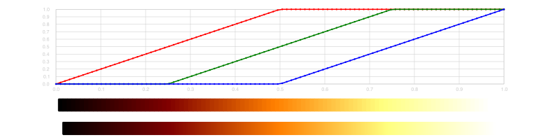
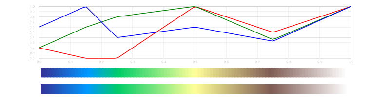
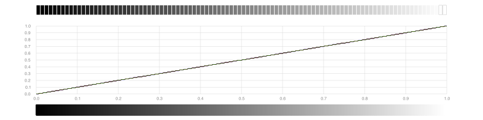
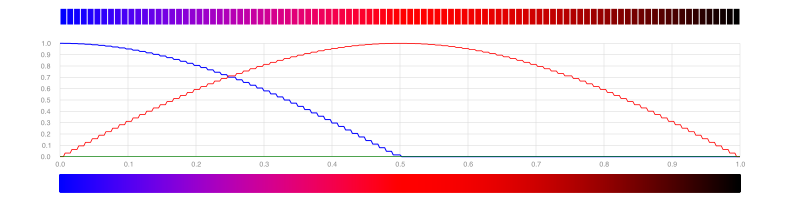
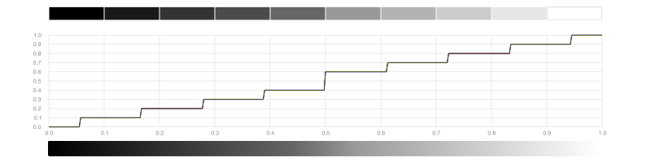
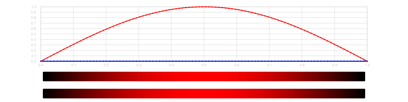
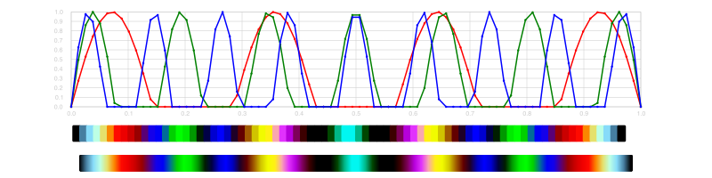

Making new colorschemes
To make new ColorSchemes, you can use make_colorscheme(), and supply information about the color sequences in various formats:
- linearly-segmented dictionary
- 'indexed list'
- defined by three functions
Linearly-segmented colors
A linearly-segmented color dictionary looks like this:
cdict = Dict(:red => ((0.0, 0.0, 0.0),
(0.5, 1.0, 1.0),
(1.0, 1.0, 1.0)),
:green => ((0.0, 0.0, 0.0),
(0.25, 0.0, 0.0),
(0.75, 1.0, 1.0),
(1.0, 1.0, 1.0)),
:blue => ((0.0, 0.0, 0.0),
(0.5, 0.0, 0.0),
(1.0, 1.0, 1.0)))The first number in each tuple for each color increases from 0 to 1, the second and third determine the color values. (TODO - how exactly?)
To create a new ColorScheme from a suitable dictionary, call make_colorscheme().
using Colors, ColorSchemes
scheme = make_colorscheme(dict)By plotting the color components separately it's possible to see how the curves change. This diagram both the defined color levels and a continuously-sampled image:
cdict = Dict(:red => ((0.0, 0.0, 0.0),
(0.5, 1.0, 1.0),
(1.0, 1.0, 1.0)),
:green => ((0.0, 0.0, 0.0),
(0.25, 0.0, 0.0),
(0.75, 1.0, 1.0),
(1.0, 1.0, 1.0)),
:blue => ((0.0, 0.0, 0.0),
(0.5, 0.0, 0.0),
scheme = make_colorscheme(cdict)
If you want to save an image of this, use colorscheme_to_image():
using ColorSchemes, ColorSchemeTools, FileIO
img = colorscheme_to_image(ColorScheme(scheme), 450, 60)
save("/tmp/linseg.png", img)ColorSchemeTools.get_linear_segment_color — Function.get_linear_segment_color(dict, n)Get the RGB color for value n from a dictionary of linear color segments.
A dictionary where red increases from 0 to 1 over the bottom half, green does the same over the middle half, and blue over the top half, looks like this:
cdict = Dict(:red => ((0.0, 0.0, 0.0),
(0.5, 1.0, 1.0),
(1.0, 1.0, 1.0)),
:green => ((0.0, 0.0, 0.0),
(0.25, 0.0, 0.0),
(0.75, 1.0, 1.0),
(1.0, 1.0, 1.0)),
:blue => ((0.0, 0.0, 0.0),
(0.5, 0.0, 0.0),
(1.0, 1.0, 1.0)))The value of RGB component at every value of n is defined by a set of tuples. In each tuple, the first number is x. Colors are linearly interpolated in bands between consecutive values of x; if the first tuple is given by (Z, A, B) and the second tuple by (X, C, D), the color of a point n between Z and X will be given by (n - Z) / (X - Z) * (C - B) + B.
For example, given an entry like this:
:red => ((0.0, 0.0, 0.0),
(0.5, 1.0, 1.0),
(1.0, 1.0, 1.0))and if n = 0.75, we return 1.0; 0.75 is between the second and third segments, but we'd already reached 1.0 (segment 2) when n was 0.5.
Indexed-list color schemes
An 'indexed list' color scheme looks like this:
terrain = (
(0.00, (0.2, 0.2, 0.6)),
(0.15, (0.0, 0.6, 1.0)),
(0.25, (0.0, 0.8, 0.4)),
(0.50, (1.0, 1.0, 0.6)),
(0.75, (0.5, 0.36, 0.33)),
(1.00, (1.0, 1.0, 1.0))
)The first element in each is the location between 0 and 1, the second specifies the RGB values at that point.
The make_colorscheme(indexedlist) function makes a new ColorScheme from such an indexed list.
make_colorscheme(terrain)terrain_data = (
(0.00, (0.2, 0.2, 0.6)),
(0.15, (0.0, 0.6, 1.0)),
(0.25, (0.0, 0.8, 0.4)),
(0.50, (1.0, 1.0, 0.6)),
(0.75, (0.5, 0.36, 0.33)),
(1.00, (1.0, 1.0, 1.0)))
terrain = make_colorscheme(terrain_data, length = 20)
Functional color schemes
The colors in a 'functional' color scheme are produced by three functions that calculate the color values at each point on the scheme.
The make_colorscheme() function applies the first supplied function at each point on the colorscheme for the red values, the second function for the green values, and the third for the blue. You can use defined functions or supply anonymous ones.
Examples
This example returns a smooth black to white gradient, because the identity() function gives back as good as it gets.
fscheme = make_colorscheme(identity, identity, identity)
This next example uses the sin() function on values from 0 to π to control the red, and the cos() function from 0 to π to control the blue.
fscheme = make_colorscheme((n) -> sin(n*π), (n) -> 0, (n) -> cos(n*π))
You can generate stepped gradients by controlling the numbers. Here, each point on the scheme is nudged to the nearest multiple of 0.1.
fscheme = make_colorscheme(
(n) -> round(n, digits=1),
(n) -> round(n, digits=1),
(n) -> round(n, digits=1), length=10)
This example sends the red channel from black to red and back again.
fscheme = make_colorscheme(n -> sin(n * π), (n) -> 0, (n) -> 0)
This example produces a stripey colorscheme as the rippling sine waves continually change phase:
ripple7(n) = sin(π * 7n)
ripple13(n) = sin(π * 13n)
ripple17(n) = sin(π * 17n)
fscheme = make_colorscheme(ripple7, ripple13, ripple17, length=80)
ColorSchemeTools.make_colorscheme — Function.make_colorscheme(dict;
length=100)make_colorscheme(indexedlist, name::Symbol;
length=100)Make a colorscheme using an 'indexed list' like this:
gist_rainbow = (
(0.000, (1.00, 0.00, 0.16)),
(0.030, (1.00, 0.00, 0.00)),
(0.215, (1.00, 1.00, 0.00)),
(0.400, (0.00, 1.00, 0.00)),
(0.586, (0.00, 1.00, 1.00)),
(0.770, (0.00, 0.00, 1.00)),
(0.954, (1.00, 0.00, 1.00)),
(1.000, (1.00, 0.00, 0.75))
)
make_colorscheme(gist_rainbow)The first element of this list of tuples is the point on the color scheme.
make_colorscheme(redfunction::Function, greenfunction::Function, bluefunction::Function;
length=100)Make a colorscheme using functions. Each function should return a value between 0 and 1 for that color component at each point on the colorscheme.